Setting Up Mullvad VPN on Linux
This tutorial shows two ways to use Mullvad VPN on Linux:
- Method 1: the Mullvad app. It is the easier way. A background service (daemon) manages the tunnel, and you control it with the
mullvadcommand, so switching locations takes one command. - Method 2: WireGuard only, without the app. You download a configuration file and bring the tunnel up yourself with
wg-quick. Nothing else runs in the background, but you manage the key, the file, and the DNS setting yourself.
Both methods connect to the same Mullvad servers. The commands for Method 1 are for Arch Linux.
Method 1: the Mullvad app
1. Make room for a WireGuard key
The app registers your computer as a new device, which uses one WireGuard key on your Mullvad account. An account can hold only a limited number of keys. If all of them are already in use, open the WireGuard keys page of your account and delete one you no longer need.
When you log in with the app later (step 4), a new key appears in this list.
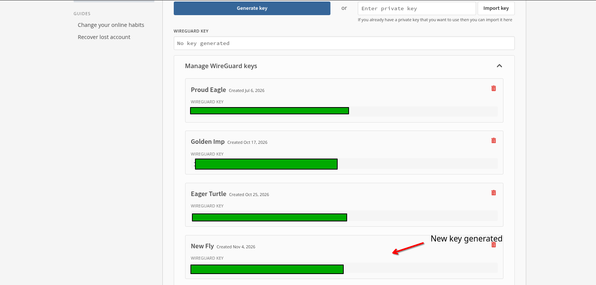
2. Install
sudo pacman -S mullvad-vpn3. Start the daemon
The daemon is the background service that the mullvad command talks to. Enable it so it also starts at boot:
sudo systemctl enable --now mullvad-daemonThen check that it is running. The status should show active (running).
systemctl status mullvad-daemon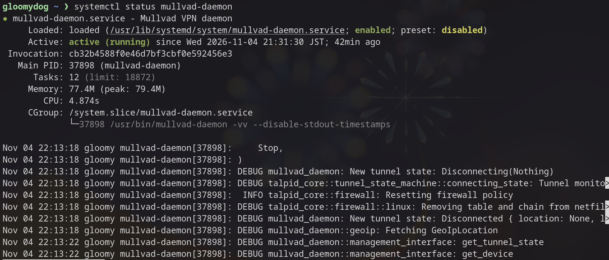
4. Log in to your Mullvad account
mullvad account loginThe command asks for your account number. You can also pass it as an argument (mullvad account login <your account number>), but then it stays in your shell history, so I prefer the prompt. The account number is the only credential Mullvad has, so never share it.
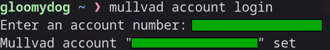
5. Choose a location
List all relays:
mullvad relay listList only the countries (the country lines are the ones that start at the left edge):
mullvad relay list | grep '^\S'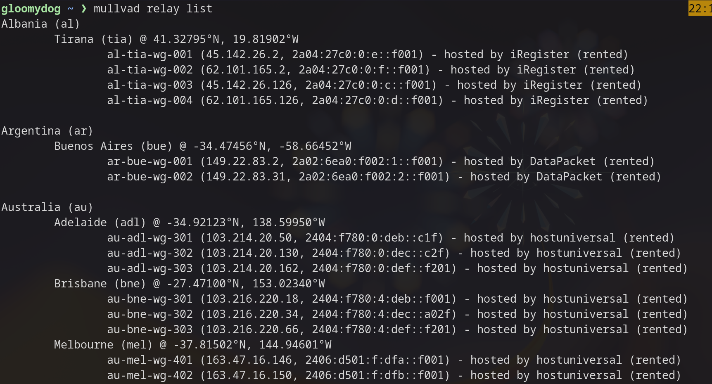
List the servers of one country. Server names look like se-sto-wg-209: country (Sweden), city (Stockholm), protocol (WireGuard), and a number. Each line also tells you whether the server is owned by Mullvad or rented from a hosting provider.
mullvad relay list | grep se-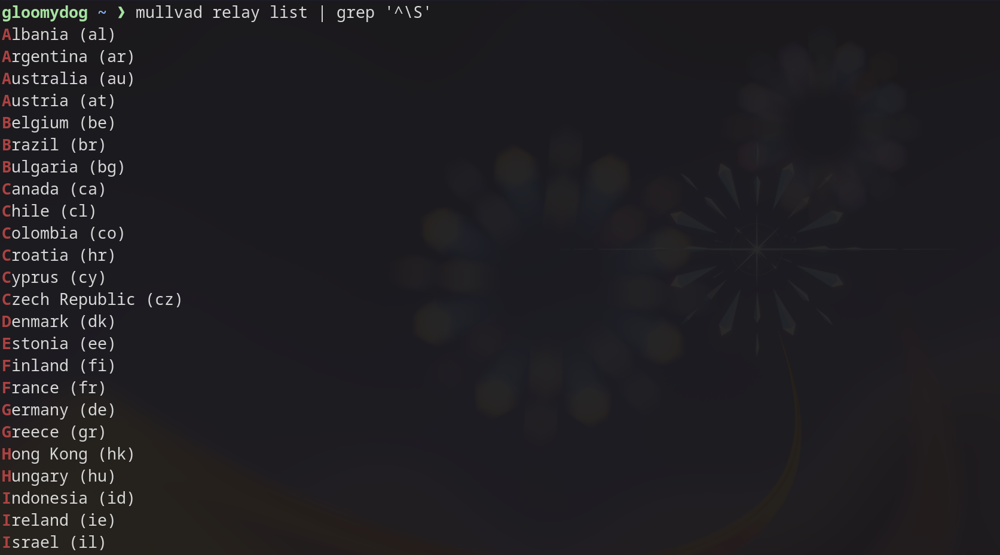
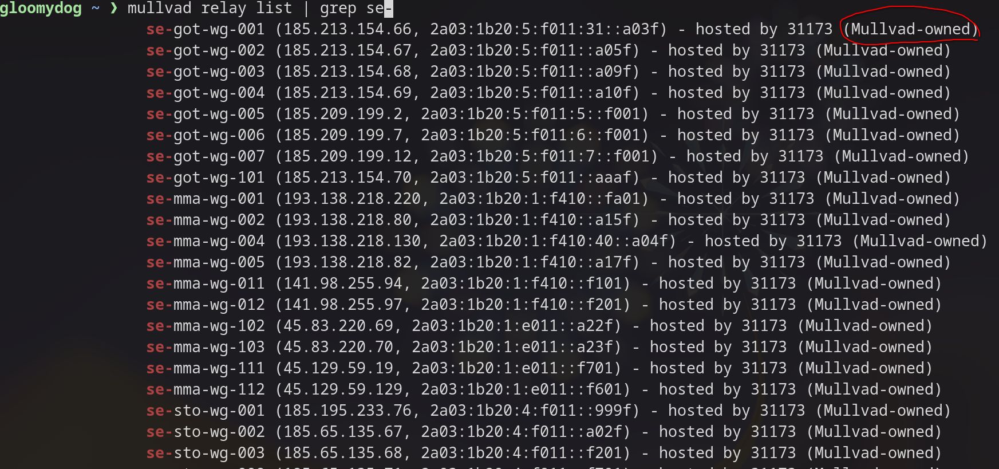
6. Connect
Set the location, connect, and check the status:
mullvad relay set location se
mullvad connect
mullvad statusThe status should show Connected, the relay you are using, and its visible location. You can also narrow the location down to a city, for example mullvad relay set location se sto.
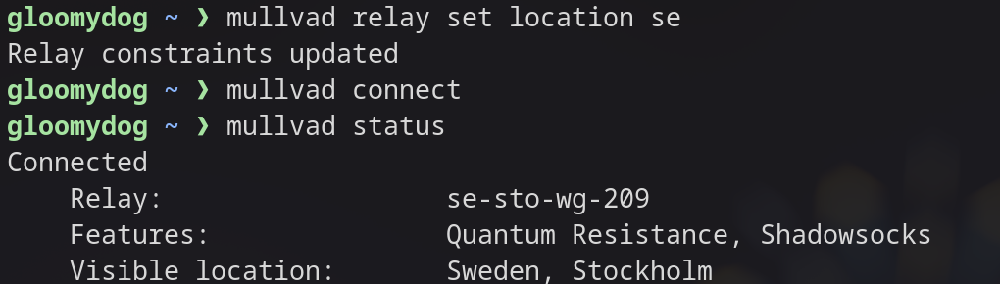
Under the hood, the app uses WireGuard. You can see the WireGuard interface it created:
ip link | grep mullvad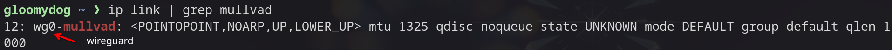
To double-check from the outside, ask Mullvad whether your traffic comes through its network:
curl https://am.i.mullvad.net/connected7. Change your location
Set another location. If you are connected, the app reconnects to the new relay automatically.
mullvad relay set location jp
mullvad statusRight after the change, the status may still say Connecting. Run mullvad status again after a second.
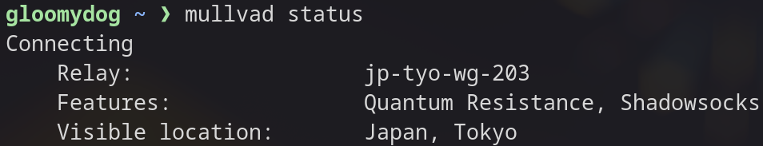
8. Disconnect
mullvad disconnectThe status now shows Disconnected.
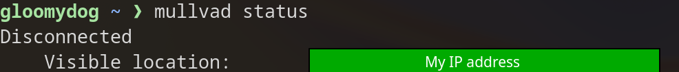
Optional: auto-connect and lockdown mode
Connect automatically when the daemon starts:
mullvad auto-connect set onLockdown mode blocks all network traffic while the VPN is not connected, so nothing leaks if the tunnel drops. Be careful: with lockdown mode on, you have no internet access at all until you connect.
mullvad lockdown-mode set onMethod 2: WireGuard only (no app)
1. Generate a WireGuard configuration
- Visit the official Mullvad website, go to your account, and find Downloads > WireGuard configuration.
- Select your OS (Linux, of course) and click Generate key.
- Scroll down and select a location and a server. Some countries offer multiple servers. Here, I selected Switzerland and
ch-zrh-wg-202. - Choose your connection protocol and content-blocking options, then download the file to your PC.
In this method, I use WireGuard directly instead of the app. If you prefer the app, see Method 1.
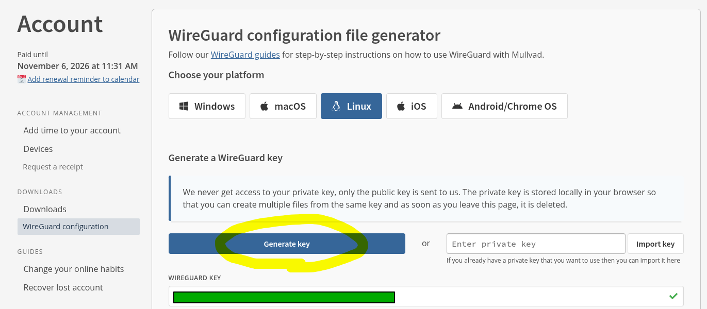
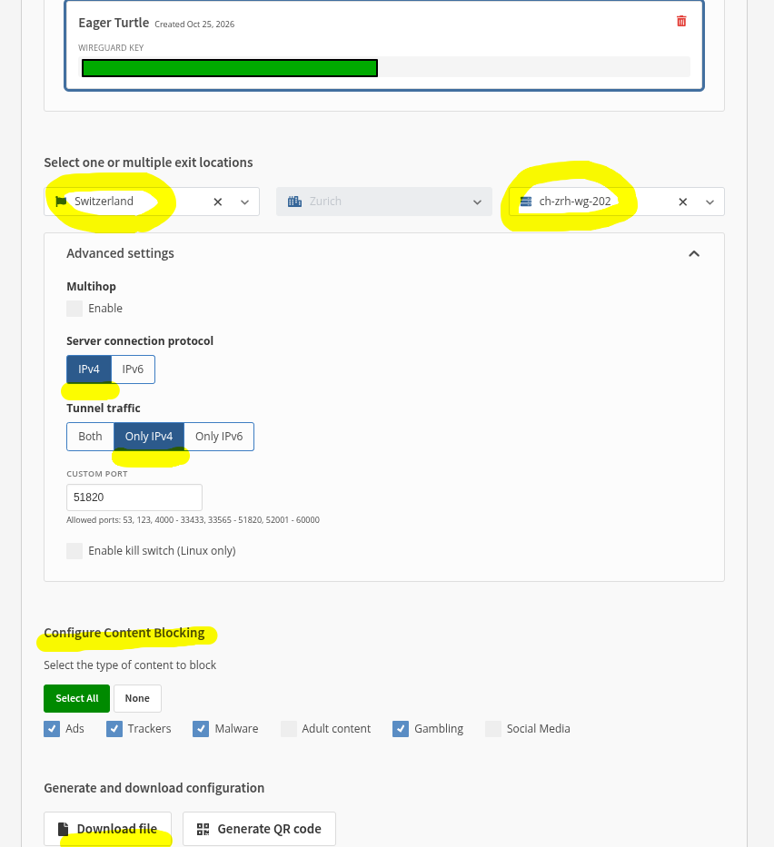
2. Edit the DNS setting (optional)
I use AdGuard Home as my DNS server, so I had to edit the configuration file. The file contains a default DNS entry, which I commented out to disable it, because it conflicted with my AdGuard DNS settings.
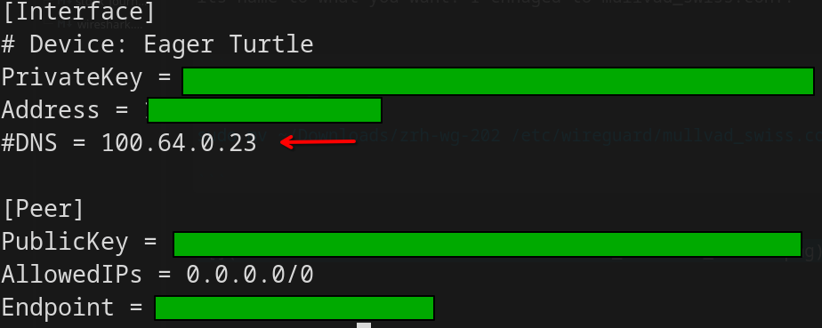
If you are not using your own DNS, skip this step.
3. Install the configuration file
Move the downloaded file to the WireGuard directory and rename it as you like. I renamed mine to mullvad_swiss.conf.
sudo mv ~/Downloads/ch-zrh-wg-202.conf /etc/wireguard/mullvad_swiss.confYou can check the contents with:
sudo cat /etc/wireguard/mullvad_swiss.conf4. Connect to Mullvad VPN
sudo wg-quick up mullvad_swiss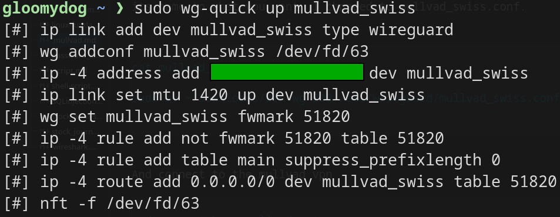
5. Disconnect
To disconnect, run:
sudo wg-quick down mullvad_swiss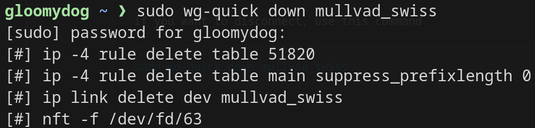